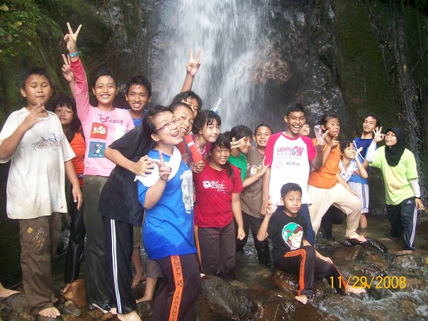
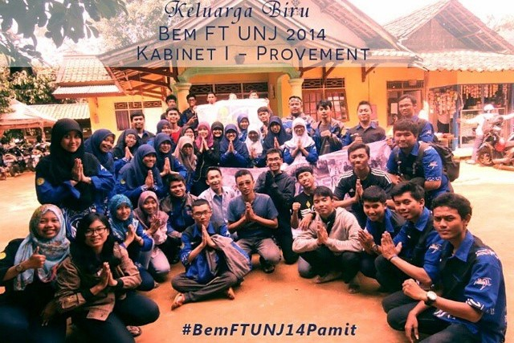

OSIS, Paskibra & MPK
Sejak SMP saya suka menguji jiwa kepemimpinan saya dengan mengikuti sejumlah organisasi, ekstrakurikuler, dan kegiatan non-akademik lainnya. Selain menumbuhkan jiwa kepemimpinan, organisasi akan memberimu teman yang memiliki pola pikir yang berbeda.

BEM FT UNJ
Dalam Badan Eksekutif Mahasiswa Fakultas Teknik ini saya menjadi panitia untuk beberapa acara besar kampus di tingkat fakultas maupun universitas seperti Masa Pengenalan Akademik dan Blue Festival. BEM FT memberikan saya kesempatan besar untuk melatih softskill seperti komunikasi dan manajemen waktu.
PKMU
Pelatihan Kepemimpinan Mahasiswa Universitas (PKMU) merupakan kegiatan yang mengasah jiwa kepemimpinan untuk tingkat universitas. Berbeda dengan tingkat jurusan atau Fakultas, kegiatan PKMU menerjunkan peserta langsung ke masyarakat dan membantu kegiatan mereka sehari-hari.
1000 Guru
Komunitas 1000 guru ini merupakan Komunitas yang sangat frontal menyuarakan kondisi pendidikan di daerah-daerah yang tertinggal kepada pemerintah. Mereka membagikan potret pendidikan Indonesia dan kegiatan mengajar di beberapa sekolah yang kekurangan guru oleh rekan-rekan volunteer. Melalui komunitas ini diharapkan semakin banyak pemuda Indonesia yang ikut berperan memajukan pendidikan di daerah-daerah yang masih tertinggal.